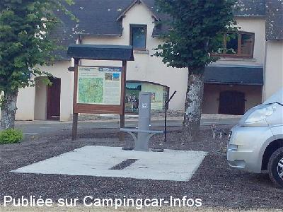
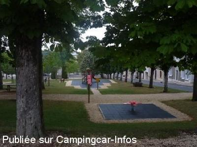
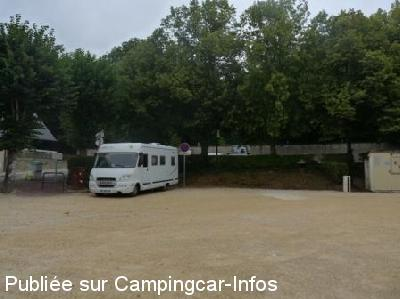

ASN = Aire de services avec stationnement nuit possible de :
MENETOU SALON
(N° 582)
Accès/adresse :
Rue de la Mairie
18510 MENETOU SALON
18510 MENETOU SALON
Latitude : (Nord) 47.23192° Décimaux ou 47° 13′ 54′′
Longitude : (Est) 2.48733° Décimaux ou 2° 29′ 14′′
Tarif : Gratuit
Services :


Commerces
Autres informations :
Ouvert du 01/04 au 31/10
6 emplacements
Tel : + 33 (0)248 648 121

Le 10/09/2014 par sigoillot

Le 11/08/2011 par sergio83

Le 11/08/2011 par sergio83
de
Franck56
le 01/09/2015 :
Je me suis rendu sur cette aire vendredi 28 août 2015 suite à la lecture de vos éloges. Malheureusement, à mon arrivée le parking en question était bondé de voiture autour de 2 malheureux CC. Une voiture était même stationnée sur l'aire de vidange...
Bref, je ne pourrais pas conseiller à mon tour cette adresse qui m'a valu un détour inutile.
J'ai finalement passé ma nuit sur l'aire très agréable de St Georges sur Moulon à une quinzaine de km au sud-ouest en direction de Bourges.
Je me suis rendu sur cette aire vendredi 28 août 2015 suite à la lecture de vos éloges. Malheureusement, à mon arrivée le parking en question était bondé de voiture autour de 2 malheureux CC. Une voiture était même stationnée sur l'aire de vidange...
Bref, je ne pourrais pas conseiller à mon tour cette adresse qui m'a valu un détour inutile.
J'ai finalement passé ma nuit sur l'aire très agréable de St Georges sur Moulon à une quinzaine de km au sud-ouest en direction de Bourges.
de
Claudette06
le 09/03/2015 :
De passage le 7 mars 2015, merci à la mairie pour cette aire qui est très propre, eau et E.D.F gratuite mais malheureusement les administrés sont moins soucieux du bien être d'autrui car nous n'avons pas pu fermé l'œil de la nuit et ce jusqu'à 6 heures moins le quart !! mobilette qui fait un bruit de tronçonneuse et que l'on fait exprès de faire tourner...portière de voiture qui claque...musique très forte ... chahut avec cris , hurlement ... enfin bref...nous avons été très déçu...et en colère, car un petit mot pour prévenir du bruit aurait pu être mis et nous aurait évité cette déception.
De passage le 7 mars 2015, merci à la mairie pour cette aire qui est très propre, eau et E.D.F gratuite mais malheureusement les administrés sont moins soucieux du bien être d'autrui car nous n'avons pas pu fermé l'œil de la nuit et ce jusqu'à 6 heures moins le quart !! mobilette qui fait un bruit de tronçonneuse et que l'on fait exprès de faire tourner...portière de voiture qui claque...musique très forte ... chahut avec cris , hurlement ... enfin bref...nous avons été très déçu...et en colère, car un petit mot pour prévenir du bruit aurait pu être mis et nous aurait évité cette déception.
de
Alain et veronique
le 15/09/2014 :
Tout et très bien très dans cette commune nous avons garé un peut plus bas car il i avais la foire au melon et course de voitures à pédale seul petit point l église sonne toute la muit les heurs et la demi.
Tout et très bien très dans cette commune nous avons garé un peut plus bas car il i avais la foire au melon et course de voitures à pédale seul petit point l église sonne toute la muit les heurs et la demi.
de
Eden 17
le 21/08/2014 :
Bonjour,
Nous avons passé 2 nuits à Menetou-Salon les 18 et 19 août. Cette commune mérite le prix d'excellence de l'accueil. L'aire a été aménagée pour permettre un accés aux services complets: vidange aisée, plein d'eau par prise automatique, vidange WC, borne électrique avec 6 prises normalisées CC, le tout absolument gratuitement. De plus, en cas de souci, le maire accourt en moins d'un quart d'heure et se met en quatre! Un vrai bonheur quand beaucoup nous prennent pour des vaches à lait! Au coin de la place, vous trouverez un resto au menu prometteur et si vous débarquez à plus de 6, il y a de quoi stationner sur la place en légère déclivité. Cerise sur le gâteau: à 200m la visite du château avec dégustation des vins de la propriété de S.A.S le prince d'Arenberg. Oui Môssieur!!!
Bonjour,
Nous avons passé 2 nuits à Menetou-Salon les 18 et 19 août. Cette commune mérite le prix d'excellence de l'accueil. L'aire a été aménagée pour permettre un accés aux services complets: vidange aisée, plein d'eau par prise automatique, vidange WC, borne électrique avec 6 prises normalisées CC, le tout absolument gratuitement. De plus, en cas de souci, le maire accourt en moins d'un quart d'heure et se met en quatre! Un vrai bonheur quand beaucoup nous prennent pour des vaches à lait! Au coin de la place, vous trouverez un resto au menu prometteur et si vous débarquez à plus de 6, il y a de quoi stationner sur la place en légère déclivité. Cerise sur le gâteau: à 200m la visite du château avec dégustation des vins de la propriété de S.A.S le prince d'Arenberg. Oui Môssieur!!!
de
Sergio
le 11/08/2011 :
§
Bonjour,
Nous avons fait une courte étape dans cette commune en juillet, une nuit très calme, eau électricité gratuite, mais pas de possibilité de vidanger.
Merci à la commune de Menetou-salon.
§
Bonjour,
Nous avons fait une courte étape dans cette commune en juillet, une nuit très calme, eau électricité gratuite, mais pas de possibilité de vidanger.
Merci à la commune de Menetou-salon.
de
MICO
le 13/02/2011 :
Nous avons stationné à cet endroit à une trentaine de
C.C lors d'un circuit, pas trop bruyant
Super accueil du Maire pour la visite
puis visite cave de vins
Nous avons stationné à cet endroit à une trentaine de
C.C lors d'un circuit, pas trop bruyant
Super accueil du Maire pour la visite
puis visite cave de vins
de
christian59
le 25/06/2006 :
Le parking est situé en pleine ville, en forte pente mais les places réservées aux CCars se trouvent tout en haut et sont sur le plat. Je ne peux garantir le calme à cet endroit très urbain pour une nuit car je n'était que de passage mais c'est très bien pour les services et pour visiter la ville ou faire les courses...
Le parking est situé en pleine ville, en forte pente mais les places réservées aux CCars se trouvent tout en haut et sont sur le plat. Je ne peux garantir le calme à cet endroit très urbain pour une nuit car je n'était que de passage mais c'est très bien pour les services et pour visiter la ville ou faire les courses...